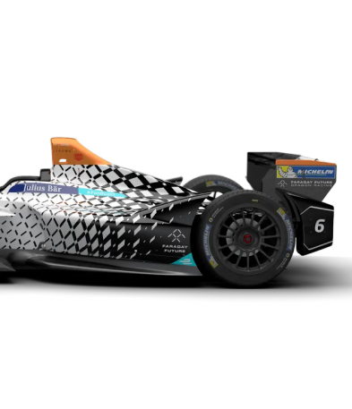
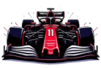

Découvrez l'évolution futuriste de la Formule 1 où technologie et innovation se rencontrent.
Explorez une sélection de films, réalisateurs visionnaires, livres incontournables,
et une galerie exclusive. Plongez dans l'histoire fascinante et l'avenir de ce sport révolutionnaire.


F1 2025 explore un futur où technologie et vitesse redéfinissent la F1,
avec des courses spectaculaires et des innovations audacieuses.
RÉALISATEUR
Joseph Kosinski, maître de la vision futuriste, repousse les limites avec ses films
innovants dans l'univers de la F1.
LIVRE
CONCEPT CARS : Design et technologie des voitures du futur. Découvrez les avancées
automobiles qui façonnent demain.
MUSIC
Autobahn de SCH : un son puissant et futuriste qui incarne l'esprit de vitesse
et d'innovation de la Formule 1.
CONTACT
Retrouvez-nous sur nos réseaux pour les dernières actus F1, films, et innovations.